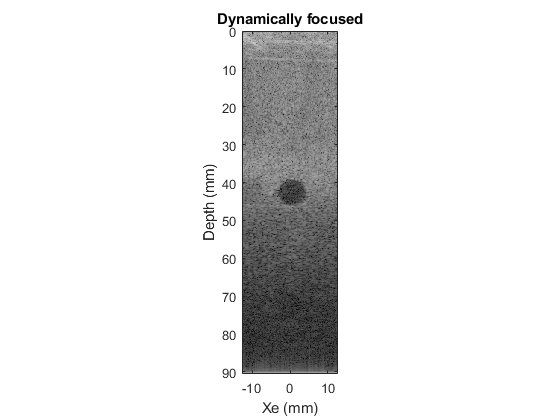

Contents
Prob1 assign 3
Tom Manuel Load in the data
close all clear all load('anecoicCystData.mat') data = veraStrct.data; %imagesc(data(:,:,64),[-100 100])
get masks
cystmask = roipoly();
cystmask = load('cystmask.mat'); cystmask=cystmask.cystmask; noisemask=load('noisemask.mat'); noisemask=noisemask.noisemask; % noisemask = roipoly();
First I will create a grid that represents the x and z coordinates of each
%pixel in physical space Nx = veraStrct.numElementsPerXmt; dx = 1E-3*veraStrct.XMTspacingMM; %get Nx,dx,Nz, and dz foo = size(data); Nz = foo(1); t0 = veraStrct.timeZero -1; % nPts to throw away Nz = foo(1)-t0; data = data(t0+1:end,:,:); foo = size(data);
Parameterize filter to see what works best
no filter: contrast: 20.18, CNR 2.42
% contrast: 19.40, CNR 3.91 cf .27 bw .1 % contrast: 20.71, CNR 3.65 cf .29 bw .15 % contrast: 20.1, CNR 3.93 .25 .14 order 20 % lower order, better contrast % higher order, better CNR %cf = .24:.01:.3; cf = .25; bw = .14; order=1:5:30; %bw = .1:.02:.2; %images = zeros([Nz Nx length(cf) length(bw)]); %images = zeros([Nz Nx length(order)]); %imagesuc = images; %unconpressed
Filter Data
%for oo =1:length(order) %for cc=1:1%length(cf) %for bb = 1:1%length(bw) % select parameters fs = 1E6.*veraStrct.samplingRateMHz; %(sam/s) Nf = fs/2; %nyquist freq (sam/s) Fc = 1E6.*veraStrct.frequencyMHz; %center freq (cyc/s) Fcs = Fc/fs; % center freq (cyc/sam) % bandwidth = .14; cf = .25; %center frequency % bandwidth = bw(bb); % centf = cf(cc); lf = cf-bandwidth; hf = cf+bandwidth; order = 10; % create filter ([order, window]) with window being relative to samp rate b = fir1(order,[lf hf]); dfilt = filter(b,1,data);
% woah do you have to guess c to get dz?? % dz = [m/s]*[s/sample] = c * fs^-1 c = 1540; %m/s dz = .5 * c / 20E6; % build coordinate matrices Xe = repmat(dx.*linspace(-Nx/2,Nx/2,Nx),[Nz 1]); Ze = repmat(dz.*linspace(0,Nz-1,Nz)',[1,Nx]); % set focus (in meters) xf = 0; % create a time vector fs = veraStrct.samplingRateMHz; t = 1E-6 .*linspace(0,Nz/fs,Nz); % calculate delay Trx = (1/c)*sqrt((Xe-xf).^2 + (Ze).^2) + Ze/c; %[s] %Trx = Trx - min(Trx(:)); Trx = Trx - repmat(min(Trx,[],2),[1 Nx]); % h=waitbar(0,'processing'); datad = zeros(size(data)); %delayed data for i=1:128 datad(:,i,:) = interp1(t,dfilt(:,i,:),t+Trx(:,i)','linear'); waitbar(i/128,h); end close(h); % sum imf = squeeze(sum(datad,2)); %sum imf(isnan(imf))=-1000; %interp1 drops some Nans in here imagesuc(:,:,1)=abs(hilbert(imf)); % compress imf = 20.*log10(abs(hilbert(imf))); % image of delayed and summed data Zvec = dz.*linspace(0,Nz-1,Nz); % z axis for plotting time figure imagesc(Xe(1,:).*1000,Zvec.*1000,imf,[10 100]) colormap('gray') title('Dynamically focused') xlabel('Xe (mm)') ylabel('Depth (mm)') axis image %images(:,:,oo)=imf; %end

look through the images
Zvec = dz.*linspace(0,Nz-1,Nz); % z axis for plotting time imagesuc(isnan(imagesuc))=0; for i=1:length(order) %for j=1:length(bw) % imagesc(Xe(1,:).*1000,Zvec.*1000,images(:,:,i),[10 100]) % colormap('gray') % title('Dynamically focused') % xlabel('Xe (mm)') % ylabel('Depth (mm)') % axis image %title(strcat('center freq: ',string(cf(i)),'; bandwidth: ',string(bw(j)))) pause(.5) foo = imagesuc(:,:,i).*cystmask; bar = imagesuc(:,:,i).*noisemask; contrast = -20.*log10((sum(sum(foo))/sum(sum(cystmask)))/(sum(sum(bar))/sum(sum(noisemask)))) %CNR = 20*log10((mean(bar(:))-mean(foo(:)))/sqrt(std(foo(:)).^2 + std(bar(:)).^2)) CNR = 20*log10((mean(nonzeros(bar))-mean(nonzeros(foo)))/... sqrt(std(nonzeros(foo)).^2 + std(nonzeros(bar)).^2)) i %end end % contrast: 19.40, CNR 3.91 cf .27 bw .1 % contrast: 20.71, CNR 3.65 cf .29 bw .15
contrast =
20.7114
CNR =
3.0382
i =
1
